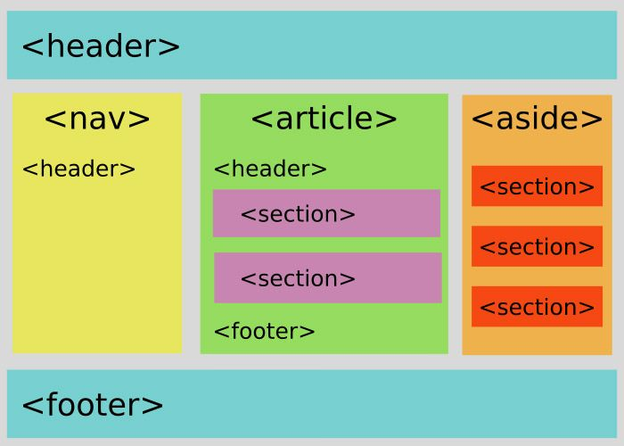

Dato: 03.09.2019
Semantikk og ny struktur
Min mening
De nye HTML5 tagene er til for å gjøre formateringen enklere å se på
og skaper en mer direkte og enklere måte å skrive html forstårlig.
la oss ta for oss main tagen den fungere som en "warp around" for hele artikkel
delen, mens før for å få en "wrap around" måtte vi skrive <.div class="warp"><./div>,
dette er en veldig tungvint måte å skrive på, dette gjorde at vi måtte definere classen
og ikke tagen vis vi skulle gjøre om kun den som feks med styleing, mens nå med main trenger vi teknisksett ikke
en klasse eller id fordi main er allerede er predefinert som en "wrapper".

Gammelt VS nytt
De nye HTML5 tagene gjør så det ikke p inne i span inne i div inne i en div.
Men heller p inne i en article inne i en main tag.
Som gjør jobben om å strukurer HTML arket enklere og mer forstårlig.
Som vis man har
"<.div><.div><.span><.p><./p><./span><./div><./div>"
så er dette veldig rotete og ikke veldig lesbart men vis man heller har
"<.main><.article><.p><./p><./article><./main>"*1
så kan man se akkurat hvori strukturen man har sitt content. det er også enklere å style de nye tagsa fordi
før måtte vi bruke forskjellige classes eller id for style de forskjellige divsa,
men nå har vi en mer simple struktur som er enkelere og differere.
Bilde kilder
Semantikk bilde Semantikk gammelt vs nytt*1
(punktumene er for å ikke skrive en gyldig kode, for lettere illustrere koden)